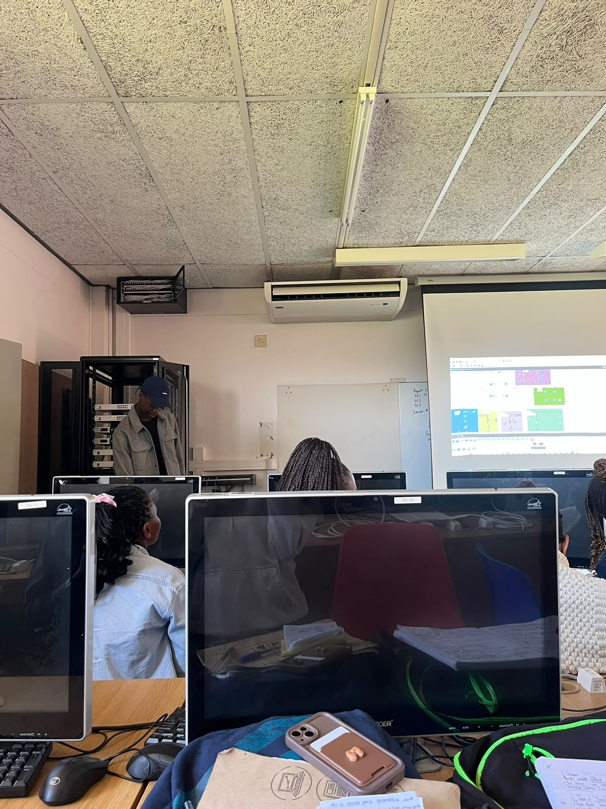
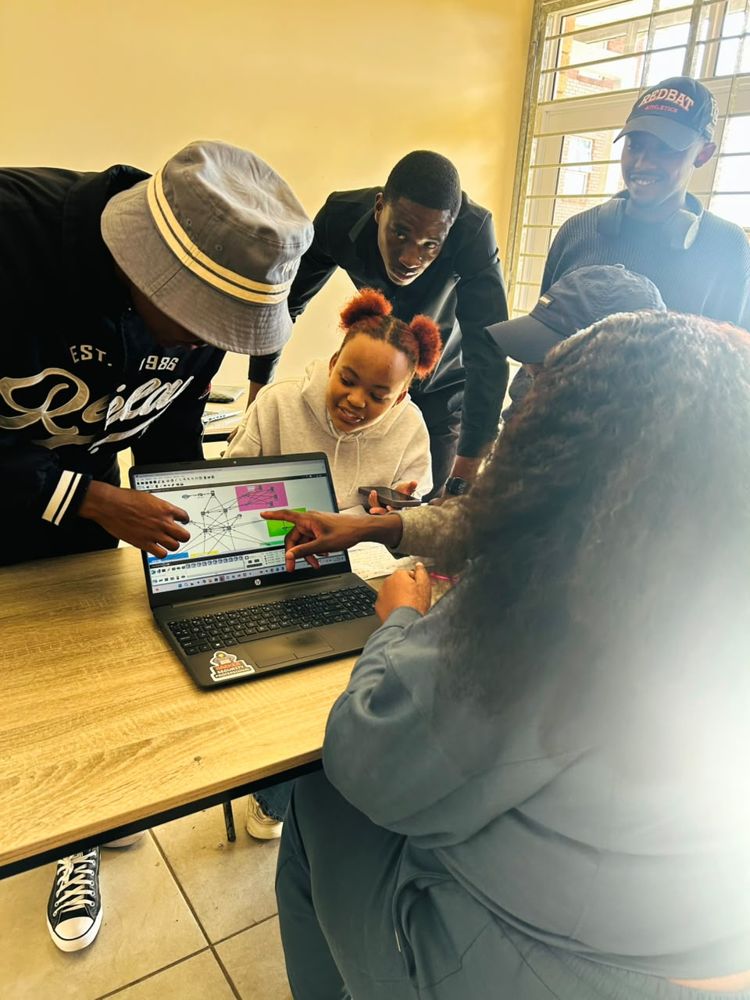

01. Preparation
I prepare tutorial material in advance and identify the main learning outcomes. This helps me organise the session and focus on what students need to learn.
My approach to delivering tutorials focuses on clear explanations, student participation, practical examples and creating a supportive learning environment.

I aim to make every tutorial understandable, engaging and useful. I encourage students to ask questions, participate in activities and practise what they have learned.
I prepare tutorial material in advance and identify the main learning outcomes. This helps me organise the session and focus on what students need to learn.
I explain concepts in simple language and use examples to make difficult topics easier to understand.
I encourage students to ask questions, share ideas and take part in activities instead of only listening.
An effective tutorial gives students the opportunity to understand, practise and apply their knowledge. I would use the following methods during a session:

My goal is to help students feel comfortable asking questions, develop confidence in their abilities and improve their understanding of the subject. I want students to leave each tutorial with knowledge they can apply independently.